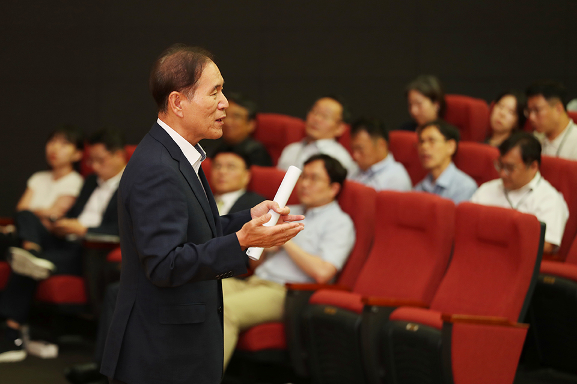
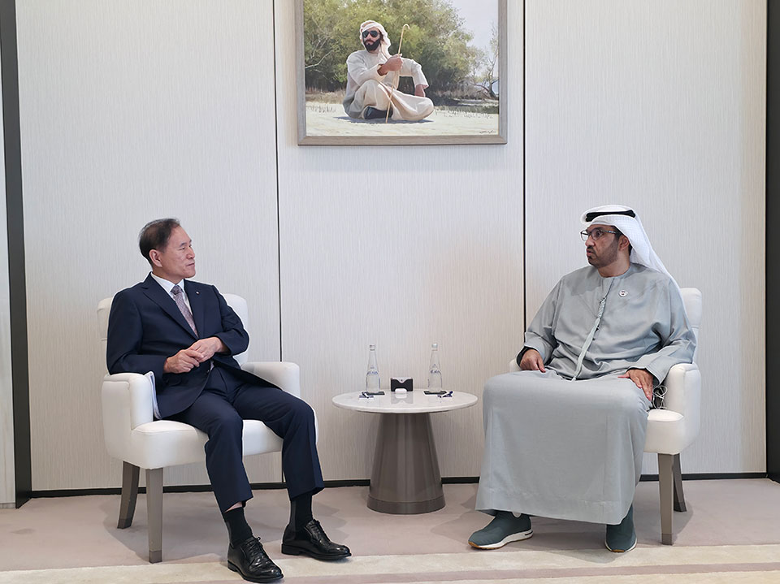
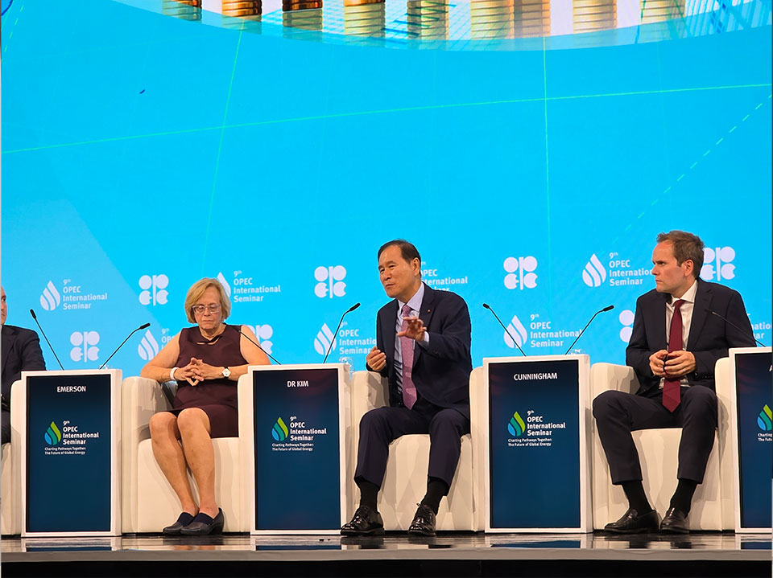
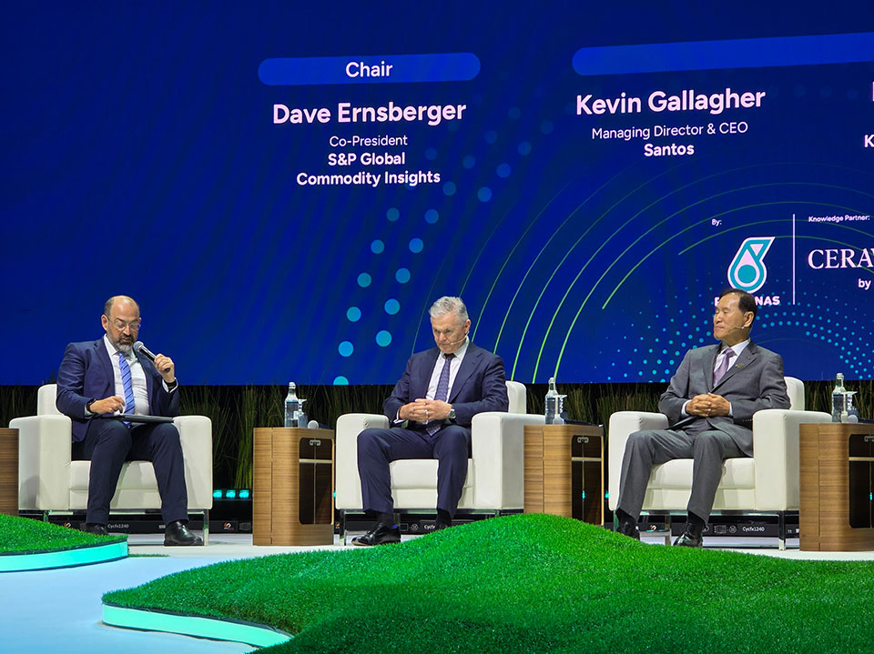
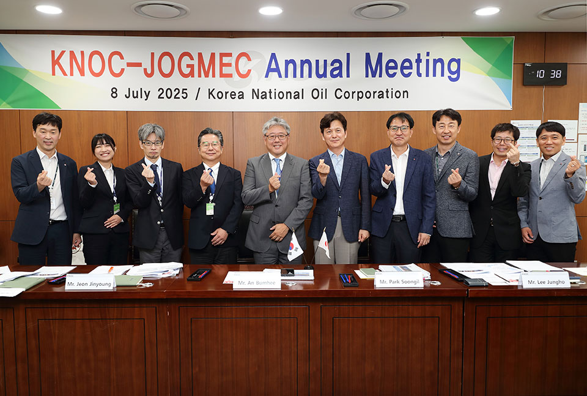
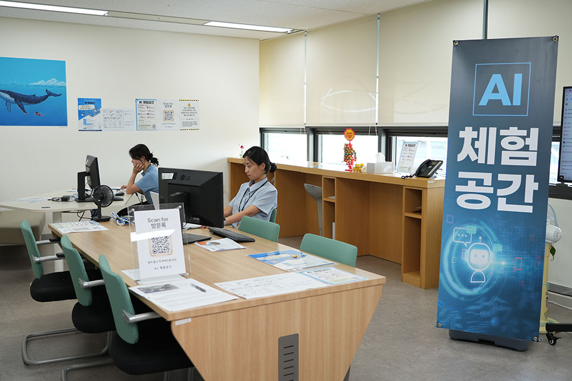
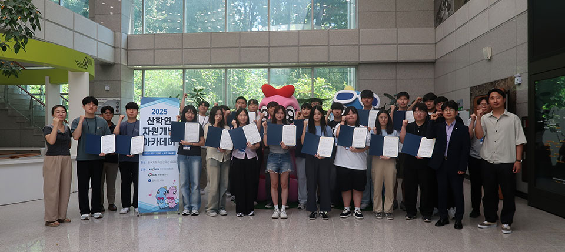
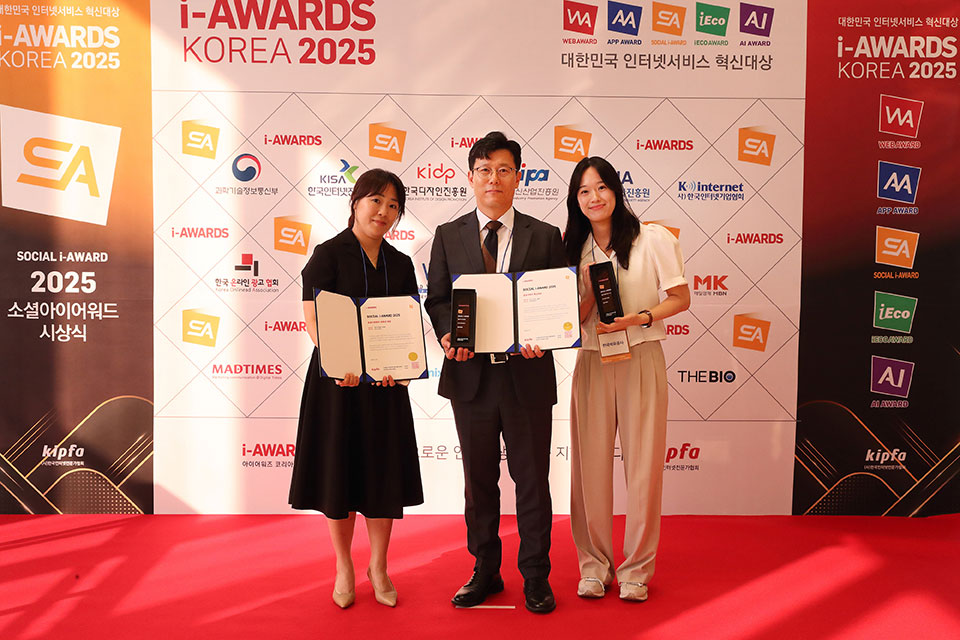
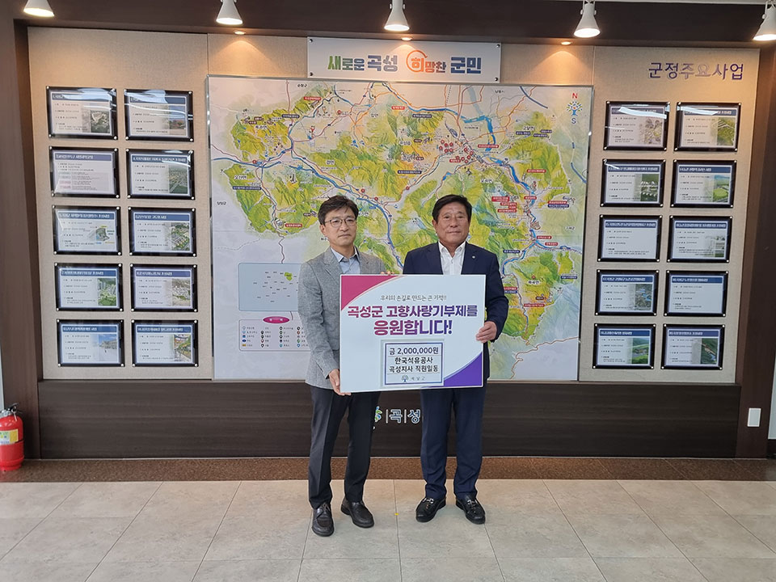
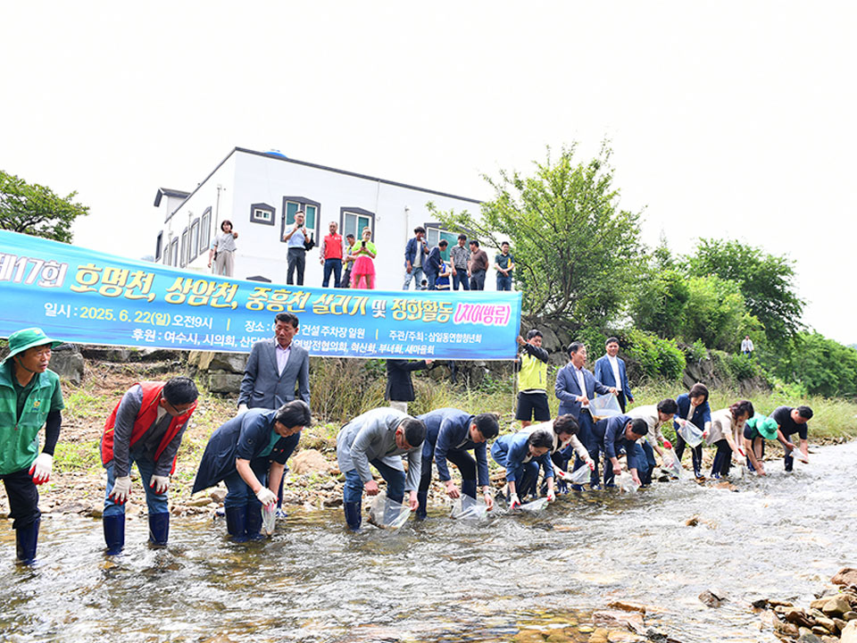

[CEO 일정] 2025년 3분기 타운홀 미팅 개최
7월 16일, 본사 1층 대강당에서 2025년 3분기 타운홀 미팅이 개최됐다. 온/오프라인으로 동시 진행된 이번 타운홀 미팅에서는 상반기 공사의 주요 성과를 리뷰하는 것을 시작으로, 윤리경영팀에서 자체 청렴도 조사 결과를 발표하는 한편, 재무성과 등과 관련한 경영 현안을 공유하고, 구성원들의 사전 질의에 대한 김동섭 사장의 답변 시간으로 이어졌다.

타운홀 미팅에 참석한 김동섭 사장OPEC International Semina 및 Energy Asia 2025 참석
김동섭 사장이 7월 6일부터 8일까지 UAE 아부다비를 방문하여, 술탄 알 자베르 ADNOC그룹 총재 면담을 통해 최근 중동 정세 및 양사 파트너십 확대 방안을 협의하고, KADOC법인의 사업 현안을 점검했다. 이후 김동섭 사장은 오스트리아로 이동해 7월 9일부터 11일까지 오스트리아 빈 호프부르크 궁전에서 개최되는 제9회 OPEC International Seminar에 참석했다. 공사가 이번 행사에 초청받고 참여하는 것은 최초의 일로, 김동섭 사장은 이 자리에서 오프닝 세러모니와 High-level Roundtable 패널로 참석하고 주요 참석 연사들과 면담을 진행했다.

ADNOC그룹 총재 면담
OPEC International Semina
Energy Asia 2025그런 가운데 김동섭 사장은, 말레이시아 국영석유사인 페트로나스가 주최하는 Energy Asia 2025에 참석했다. 김동섭 사장은 6월 14일부터 18일까지 출장길에 올라, Energy Asia Global Leadership Executive Forum과 Leadership Dialogue에 참석하고, 컨퍼런스에 참석한 주요 에너지 업체와 사업 미팅을 진행했다.
공사-JOGMEC 간 정례회의 개최
7월 7일부터 9일까지 공사와 일본 조그멕 간 정례회의가 본사와 평택지사에서 개최됐다. 양사의 정례회의는 지난 2007년 6월 맺은 제휴협정에 의한 것으로, 7월 8일에는 본사에서 연례회의를 열고 양국의 석유 비축정책과 비축기술 현안을 논의했다. 한일 양국 정부의 석유비축정책 현황 및 비축기지 시설관리, 비축유 품질관리, 비축기지 재난관리 등 비축기지 운영과 관련한 이슈에 대해 토의했으며, 특히 올해는 원유탱크 개방검사 시 내부 청소공법 등이 집중적으로 논의됐다. 그러는 한편 7월 9일에는 평택지사를 방문해 지하 LPG 저장에 관한 기술적 노하우 등을 공유했다.

공사-JOGMEC 간 정례회의국내 석유수급 통계 공표
공사에서 매월 약 2만 3천여 개의 석유사업자로부터 받은 자료를 수집해 작성하는 2024년 국내 석유수급 통계를 확정해 페트로넷에 공표했다. 공사에 따르면 작년 우리나라 원유 수입량은 전년 대비 2.3% 증가한 10억 3천만 배럴을 기록했으며, 국내 석유제품 소비는 전년보다 3.5% 증가한 9억 6천만 배럴로, 역대 사상 최대치를 나타냈다. 2024년 원유 및 석유제품 수입액은 총 1,131억 달러로, 국가 총수입액의 약 17.9%를 차지했다. 같은 해 수출액은 479억 달러로 국가 총수출액의 약 7.0%에 해당하며, 국내 경제 및 산업에 큰 영향을 미치고 있다.
데이터 분석 비즈니스 혁신 경진대회 개최
공사가 내부 구성원을 대상으로 하는 데이터 분석 비즈니스 혁신 경진대회를 개최하고 있다. 구성원 누구나 개인 또는 팀을 구성해 참가할 수 있으며, 공사 내외부 데이터와 공공 데이터포털, 타기관 및 민간기관 개방 데이터를 활용해 수익개선과 창출, 비용절감 등에 대한 데이터 분석 보고서를 제출하면 된다. 분석계획서 제출은 7월 25일까지, 분석보고서 제출은 7월 26일부터 9월 30일까지이며 이후 서면심사와 본선심사를 거쳐 11월, 결과를 발표할 예정이다.

한국석유공사 본사 내 AI 체험공간그런 가운데 공사의 본사 6층 도서관 올리브 내에, AI 체험공간이 마련되어 8월까지 시범 운영된다. 유료 AI 서비스를 통해 딥리서치, 분석보고서 작성, 영상 및 음성 제작 활용방법을 체험할 수 있으며, 이번 시범운영을 통해 향후 AI 서비스 구독에 대한 추가 및 교체 작업이 이뤄지게 된다.
산학연 자원개발 아카데미 운영
공사가 7월 21일부터 25일까지 한국지질자원연구원에서 진행된 2025 산학연 자원개발 아카데미를 주관, 운영했다. 이 프로그램은 2023년 6월 공사를 비롯한 14개 기관이 맺은 국내 대륙붕 자원개발 산학연 협력 플랫폼 업무협약에 따른 것으로, 공사에서는 14개 산학연 소속 26명의 대학생 등에게 석유개발 부문 업무 현장에서 활용되는 전공지식을 중점적으로 소개했다. 특히 공사는 지난해 참가자들의 피드백을 반영해 자원개발 분야 미래인재를 위한 맞춤형 교육을 제공했는데, 공사 및 한국지질자원연구원 소속 직원들이 자원개발 분야의 실무 사례를 소개하고, 공주대와 경북대 등 플랫폼 참여대학 교수진이 이론 교육을 통해 실무 역량을 뒷받침했다.

한국석유공사와 한국지질자원연구원, 참가자들의 단체 사진촬영 모습온라인 홍보 채널 3년 연속 수상
공사의 블로그 오일드림과 유튜브가 2025 소셜아이어워드에서 블로그 부문 공공서비스 부문 혁신대상과 유튜브 부문 공공기관 유튜브 분야 대상을 수상하며 3년 연속 SNS 어워드에서 수상 소식을 전했다. 공사의 블로그와 유튜브는 알찬 에너지 상식과 시의적절한 이슈 브리핑, 예상 못한 유쾌함으로 올해 ‘석유개발연대기’, ‘코지의 1분 코칭’ 등을 통해 큰 호응을 얻었다. 공사에서는 어렵게 느껴질 수 있는 공사의 사업과 석유 및 에너지 정보를 쉽게 전달할 수 있도록 다양한 시도를 해온 점이 좋은 평가로 이어진 것을 감안, 앞으로도 쉽고 유익한 콘텐츠로 국민과의 소통을 이어 나갈 계획이다.

한국석유공사 직원들이 소셜아이어워드 시상식에서 수상하고 기념촬영하는 모습전통시장 친환경 활동 지원 등
공사가 6월 25일, 울산시 중구에서 추진하는 2025년 자연순환 참여로
전통시장 가는 날 사업에 참여하기 위해 종량제 봉투 4,166매를
전달했다. 그런 가운데, 최근 공사에서는 울산 남구 가족센터 공부방
다문화 가족 자녀와 대학생 간의 멘토링 결연 활동을 지원하고, 7월
10일에는 마이코즈 대안학교 재학생 진로 탐색을 위한 본사와 울산지사
현장 견학을 진행했다. 또한, 울산에 거주하는 신규 또는 기존 결혼
이주 여성들이 공사 구성원과 함께 전통시장에서 장보기 후 도시락을
제작, 결식 우려 아동 30명에게 전달하는 다문화 한 끼 행사를 7월과
8월 총 3회 진행할 계획이다.
그런 가운데 공사 곡성지사에서는 7월 11일 곡성군수를 면담하고
고향사랑기부금 200만 원의 전달식을 가졌다. 곡성지사 직원 20명이
‘곡성에 소아과를 선물하세요’ 지정기부 사업에 참여하여 기부금을
모은 것으로, 곡성군수는 지역사회를 위해 사회적 책임을 다하는
곡성지사에 감사의 뜻을 전했다.

곡성지사, 고향사랑기부금 200만 원 전달식
여수지사, '상암천 살리기 행사'또한 공사 여수지사는 6월 22일, 인근 지역 하천인 상암천의 자연 생태복원을 위한 ‘상암천 살리기 행사’에 참여했다. 이 행사는 여수 국가산업단지 조성 후 황폐해진 상암천의 생태계 복원을 위한 하천 정화 및 치어 방류 등의 환경보존 캠페인으로, 여수지사는 매년 이 행사에 참여해 지역 내 ‘환경지킴이’로서의 역할을 성실히 수행하고 있다.